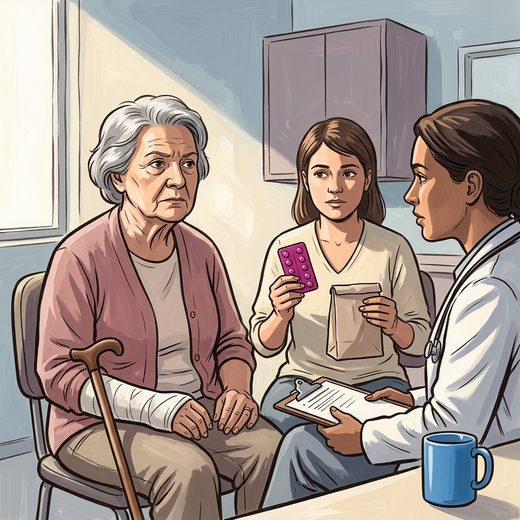

Consulta rápida à beira do leito
Condutas, doses e interações.
Referências da aula · 5
- 2023 American Geriatrics Society Beers Criteria® Update Expert Panel. J Am Geriatr Soc. 2023;71(7):2052-81. PMID 37139824. doi:10.1111/jgs.18372.PubMedDOI
- Neil-Sztramko SE, Levy AM, Flint AJ, Goodarzi Z, Gough A, Trenaman SC, et al. Pharmacological treatment of anxiety in older adults: a systematic review and meta-analysis. Lancet Psychiatry. 2025;12(6):421-32. PMID 40379362. doi:10.1016/S2215-0366(25)00100-2.PubMedDOI
- Lenze EJ, Rollman BL, Shear MK, Dew MA, Pollock BG, Ciliberti C, et al. Escitalopram for older adults with generalized anxiety disorder: a randomized controlled trial. JAMA. 2009;301(3):295-303. PMID 19155456. doi:10.1001/jama.2008.977.PubMedDOI
- Pottie K, Thompson W, Davies S, Grenier J, Sadowski CA, Welch V, et al. Deprescribing benzodiazepine receptor agonists: evidence-based clinical practice guideline. Can Fam Physician. 2018;64(5):339-51. PMID 29760253.PubMed
- Gould RL, Coulson MC, Patel N, Highton-Williamson E, Howard RJ. Interventions for reducing benzodiazepine use in older people: meta-analysis of randomised controlled trials. Br J Psychiatry. 2014;204(2):98-107. PMID 24493654. doi:10.1192/bjp.bp.113.126003.PubMedDOI